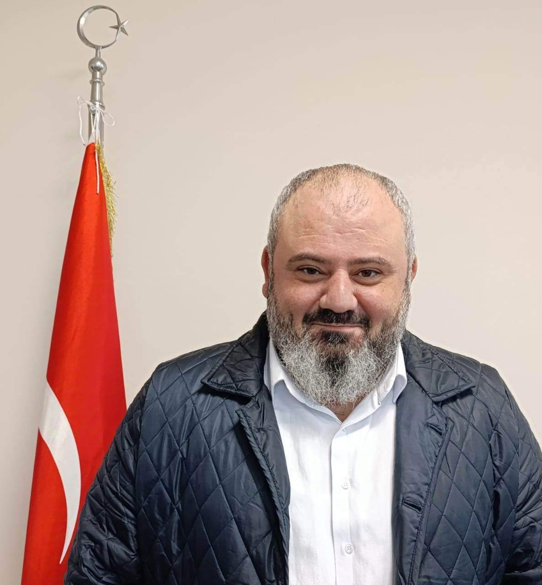

بسم الله الرحمن الرحيم
Öğretim Görevlisi & Müdür Yardımcısı
Altınova Meslek Yüksekokulu · Makine ve Metal Teknolojileri Bölümü

Marmara Üniversitesi Metalurji ve Malzeme Mühendisliği alanında doktora derecesine sahip bir akademisyen olarak, Yalova Üniversitesi Altınova Meslek Yüksekokulu'nda Öğretim Görevlisi ve Müdür Yardımcısı olarak görev yapmaktayım.
Kaynak teknolojisi, metalurji, tahribatsız muayene (NDT), kalite yönetim sistemleri ve iş sağlığı güvenliği alanlarında geniş bir akademik ve endüstriyel deneyime sahibim. Arçelik A.Ş. ve Hekimoğlu Döküm A.Ş. gibi köklü kuruluşlarda edindiğim sanayi tecrübemi akademik kariyerimde öğrencilerime aktarmaktayım.
Marmara Üniversitesi · Fen Bilimleri Enstitüsü
2020
Marmara Üniversitesi · Fen Bilimleri Enstitüsü
2007
Tez: "Betonla uyumlu polipropilen elyaf takviyeli kompozitlerin üretimi ve özellikleri"
Marmara Üniversitesi · Teknoloji Fakültesi
2023
Marmara Üniversitesi · Teknik Eğitim Fakültesi
2003
Anadolu Üniversitesi · Açıköğretim Fakültesi
2017
Yalova Üniversitesi · Altınova MYO · Kaynak Teknolojisi Pr.
Yalova Üniversitesi · Altınova Meslek Yüksekokulu
Makine ve Metal Teknolojileri Bölümü
Altınova Meslek Yüksekokulu
Makine ve Metal Teknolojileri Bölümü / MEDEK
Makine ve Metal Teknolojileri Bölümü
Arçelik A.Ş. · Çamaşır Makinesi İşletmesi
Çamaşır makinesinin görünüş grubu parçalarının tasarımı, tadilatı ve iyileştirilmesi.
Hekimoğlu Döküm A.Ş.
ISO TS 16949, ISO 9001 kalite sistemlerinin kurulması ve yönetimi. İş güvenliği uzmanlığı.
Mevlana OSGB
Enerji, akaryakıt, inşaat ve taş ocağı sektörlerinde iş sağlığı ve güvenliği hizmeti.
International Journal of Biological Macromolecules, 320, 11
DOI: 10.1016/j.ijbiomac.2025.145783Yalova Araştırmaları Kongresi – YAK2021
9th ISITES
International Symposium of Scientific Research and Innovative Studies
3rd IRDARUS'19
2. Uluslararası Bandırma ve Çevresi Sempozyumu – UBS'19
El-Cezerî Journal of Science and Engineering, 8(1)
DOI: 10.31202/ecjse.824509XR teknolojileri kullanılarak tersane ve imalat sanayisindeki üretim süreçlerinin mesleki eğitime entegrasyonu.
Kalkınma Bakanlığı destekli mesleki eğitim laboratuvarı kurulumu ve işletilmesi projesi.
Yalova Üniversitesi Altınova MYO
Cumhuriyet Mah. Atatürk Bulvarı
8. Sok. No:4 Kat:3
Altınova / YALOVA